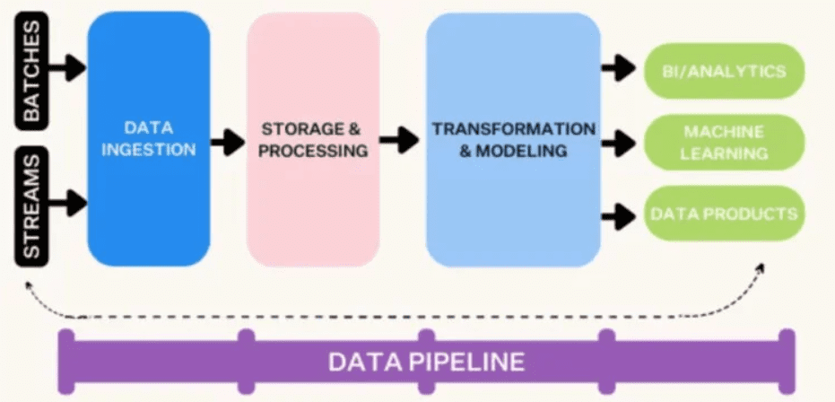
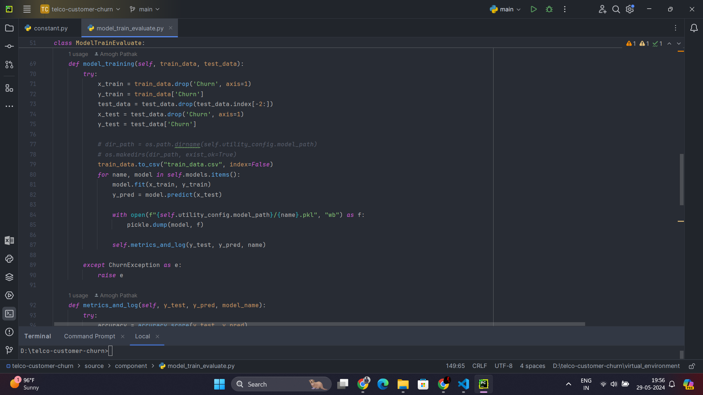
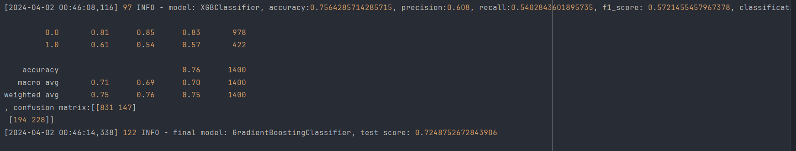
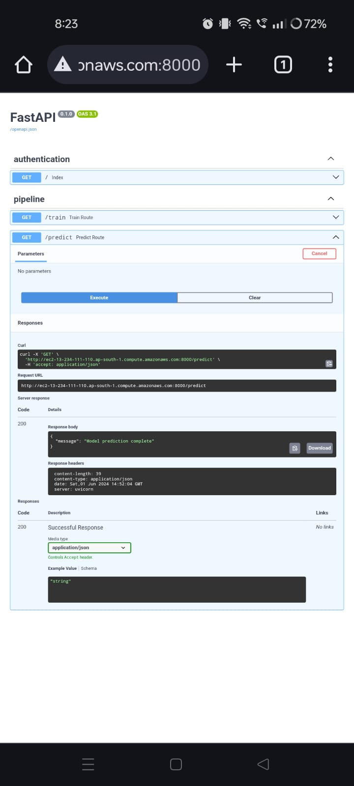

Project Overview

This project revolves around predicting customer churn in a telecommunications company using machine learning. The project follows a structured workflow encompassing exploratory data analysis (EDA), data ingestion, transformation, validation, cleaning, model building, evaluation, and performance metrics calculation. Additionally, the model is deployed using AWS Lambda function with S3 bucket integration and GitHub Actions for automation.
Exploratory Data Analysis (EDA)

This initial phase involves exploring the dataset to gain insights into customer behavior, identify patterns, and understand the distribution of features. Visualizations and statistical analysis aid in uncovering relevant trends.
Data Ingestion, Transformation, Validation, and Cleaning
Data is ingested from various sources and undergoes transformation to ensure consistency and compatibility. Validation checks are performed to identify and handle missing values, outliers, and inconsistencies. Cleaning procedures involve data preprocessing steps such as encoding categorical variables, feature scaling, and handling imbalanced classes.
Model Building
Machine learning models are trained on the preprocessed dataset to predict customer churn. Various algorithms such as logistic regression, decision trees, random forests, and gradient boosting are explored to identify the best-performing model.
Model Evaluation
The trained models are evaluated using performance metrics such as accuracy, precision, recall, F1-score, and ROC-AUC to assess their effectiveness in predicting churn.
Model Deployment
The selected model is deployed using Amazon Elastic Container Registry (ECR) for managing Docker container images, allowing for real-time predictions. Integration with an S3 bucket facilitates data storage and retrieval, while Amazon Elastic Compute Cloud (EC2) instances provide scalable computing power. GitHub Actions are employed for continuous integration and deployment (CI/CD) to automate the deployment process.
Solution Implemented
- EDA Notebook: Contains exploratory data analysis, visualizations, and statistical summaries.
- Data Preprocessing Script: Performs data ingestion, transformation, validation, and cleaning tasks to prepare the dataset for modeling.
- Model Building Script: Implements machine learning algorithms, trains models, and evaluates their performance using cross-validation techniques.
- Model Evaluation Notebook: Calculates performance metrics and provides insights into model performance.
- Deployment Scripts: Include AWS Lambda function integration with S3 bucket for model deployment. GitHub Actions workflows automate the CI/CD process for seamless deployment.
Key Skills Utilized
- Data Analysis and Visualization
- Data Preprocessing and Cleaning
- Machine Learning Model Development
- Model Evaluation and Performance Metrics
- Deployment on AWS Lambda and S3
- CI/CD with GitHub Actions